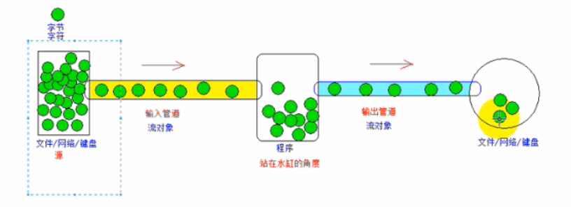

java面试之IO流
IO流
什么是IO流
流是一种抽象概念，它代表了数据的无结构化传递。按照流的方式进行输入输出，数据被当成无结构的字节序列或字符序列。从流中取得数据的操作称为提取操作，而向流中添加数据的操作称为插入操作。用来进行输入输出操作的流就称为IO流。换句话说，IO流就是以流的方式进行输入输出。
流的分类
根据流向可以分为输入流和输出流
输入流和输出流是相对程序而言的，从外部文件读取到程序中是输入流，从程序中将数据先写入到外部文件是输出流

根据传输数据单位分为字节流和字符流
- 字节流：InputStream OutputStream
- 字符流：Reader Writer
根据功能分为节点流和包装流
节点流：可以从（向）一个特定的地方（结点）读写数据，直接连接数据源。如常见的是文件的FileReader,还可以是数组、管道、字符串、关键字分别为ByteArray/CharArray,Piped,String。
处理流（包装流）：并不直接连接数据源，是对一个已存在的流的连接和封装，是一种典型的装饰器模式，使用处理流主要是为了方便的处理输入输出工作，如PrintStream,输出功能很强大，又如BufferedReader提供缓存机制，推荐输出时使用处理包装流。
一个流对象经过其他流的多次包装，称为流的连接。
一些特别的流
- 转换流： 转换流只有字节流转换为字符流。因为字符流使用起来比较方便，我们只会向更方便的方向转换
注意：一个IO流既可以是输入流又可以是字节流又或是其他形式的流，这是互不影响的。比如FileInputStream它既是输入流又是字节流还是文件节点流。
字节流和字符流的区别
java流在处理上分为字符流和字节流。实际上字节流的InputStream和OutputStream是一切的基础。实际总线中流动的只有字节流。需要对字节流做特殊解码才能得到字符流。Java中负责从字节流向字符流解码的桥梁是：InputStreamReader和InputStreamWriter。
大多数情况下，字节是数据最小的基本单位，1 byte = 8 bit，而 1 char = 2 byte = 16 bit。
流
在程序中所有的数据都是以流的方式进行传输或保存的，程序需要数据的时候要使用输入流读取数据，而当程序需要将一些数据保存起来的时候，就要使用输出流完成。程序中的输入输出都是以流的形式保存的，流中保存的实际上全都是字节文件。
Java中的流是对字节序列的抽象，我们可以想象有一个水管，只不过现在流动在水管中的不再是水，而是字节序列。和水流一样，Java中的流也具有一个“流动的方向”，通常可以从中读入一个字节序列的对象被称为输入流；能够向其写入一个字节序列的对象被称为输出流。
输入流是相对程序而言的，外部传入数据给程序需要借助输入流，而程序把数据传输到外部需要借助输出流。
字节流
Java中的字节流处理的最基本单位为单个字节，它通常用来处理二进制数据。Java中最基本的两个字节流类是InputStream和OutputStream，它们分别代表了最基本的输入字节流和输出字节流。InputStream是所有字节输入流的祖先，而OutputStream是所有字节输出流的祖先，它们都是抽象类。
字节流在默认情况下是不支持缓存的，字节流在操作时本身不会用到缓冲区（内存），是文件本身直接操作的，这意味着每调用一次read方法都会请求操作系统来读取一个字节，这往往会伴随着一次磁盘IO，因此效率会比较低。要使用内存缓冲区以提高读取的效率，我们应该使用BufferedInputStream。
需注意，使用BufferedOutputStream输出数据时如果没有关闭流，数据也是不会输出到文件当中的，即并不是所有字节流都不用到缓冲区，输入缓冲字节流BufferedInputStream和输出缓冲字节流BufferedOutputStream还是要用到缓冲区的。
字符流
Java中的字符流处理的最基本的单元是Unicode码元（大小2字节），它通常用来处理文本数据，例如字符、字符数组或字符串。Java中的String类型默认就把字符以Unicode规则编码而后存储在内存中。存储在磁盘上的数据通常有着各种各样的编码方式，不同的编码方式最终输出的字节内容是不同的，所以，字节流的读取和写入都要设置相应的编码方式。
由于字符流在输出前实际上是要完成Unicode码元序列到相应编码方式的字节序列的转换，所以它会使用内存缓冲区来存放转换后得到的字节序列，等待都转换完毕再一同写入磁盘文件中。
所有文件的储存是都是字节（byte）的储存，在磁盘上保留的并不是文件的字符而是先把字符编码成字节，再储存这些字节到磁盘。在读取文件（特别是文本文件）时，也是一个字节一个字节地读取以形成字节序列。
字节流和字符流的区别
字节流操作的基本单元为字节；字符流操作的基本单元为Unicode码元
字节流默认不使用缓冲区；字符流使用缓冲区。（因为要把字符流转换为字节流暂时存储在缓冲区待转换完成时在写或读）
字节流在操作的时候本身是不会用到缓冲区的，是与文件本身直接操作的，所以字节流在操作文件时，即使不关闭资源，文件也能输出；
字符流在操作的时候是使用到缓冲区的。如果字符流不调用close或flush方法，则不会输出任何内容。（调用close方法会自动flush）
字节流通常用于处理二进制数据，实际上它可以处理任意类型的数据(因为磁盘上都是以字节存储的)，但它不支持直接写入或读取Unicode码元；字符流通常处理文本数据，它支持写入及读取Unicode码元。
字节流可用于任何类型的对象，包括二进制对象，而字符流只能处理字符或者字符串； 字节流提供了处理任何类型的IO操作的功能，但它不能直接处理Unicode字符，而字符流就可以。
字节流和字符流的转换
字节流是最基本的，所有的InputStream和OutputStream的子类都是，主要用在处理二进制数据，它是按字节来处理的，但实际中很多的数据是文本，又提出了字符流的概念，它是按虚拟机的encode来处理，也就是要进行字符集的转化，这两个之间通过 InputStreamReader,OutputStreamWriter来关联，实际上是通过byte[]和String来关联。在从字节流转化为字符流时，实际上就是byte[]转化为String时，而在字符流转化为字节流时，实际上是String转化为byte[]时。
字符流处理的单元为2个字节的Unicode字符，分别操作字符、字符数组或字符串，而字节流处理单元为1个字节，操作字节和字节数组。所以字符流是由Java虚拟机将字节转化为2个字节的Unicode字符为单位的字符而成的，所以它对多国语言支持性比较好！如果是音频文件、图片、歌曲，就用字节流好点，如果是关系到中文（文本）的，用字符流好点。所有文件的储存是都是字节（byte）的储存，在磁盘上保留的并不是文件的字符而是先把字符编码成字节，再储存这些字节到磁盘。在读取文件（特别是文本文件）时，也是一个字节一个字节地读取以形成字节序列。
字节流可用于任何类型的对象，包括二进制对象，而字符流只能处理字符或者字符串； 字节流提供了处理任何类型的IO操作的功能，但它不能直接处理Unicode字符，而字符流就可以。
字节流与字符流主要的区别是他们的的处理方式。
本博客所有文章除特别声明外，均采用 CC BY-SA 4.0 协议 ，转载请注明出处！